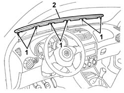

5010C12 WINDSCREEN DEMISING VENT - R.R.
- Path
- Procedures > 50 AUXILIARY UNITS > 5010 HEATING/VENTILATION - MISCELLANEOUS > 5010C AIR OUTLET AND DIFFUSERS > 5010C12 WINDSCREEN DEMISING VENT - R.R.
- Kind
- repair procedure (removal / refitting; the operation number is the code)
- Applies to
- engines: 2.0 JTS, 3.2 V6, 1.9 JTD 16V; all production periods
- Interactive page
- https://sloeber94.github.io/elrnDB-aGt/en/#/125001504
Applies to: engines: 2.0 JTS, 3.2 V6, 1.9 JTD 16V; all production periods
 Removing
Removing
 Refitting
Refitting1. Release the retainers for the diffuser.
2. Keep the diffuser.

Applies to: engines: 2.0 JTS, 3.2 V6, 1.9 JTD 16V; all production periods
Refitting
RemovingCheck that the diffuser is not damaged.
Position the diffuser and fit the retainers.
Topics that link to this page (11)
- 5040A80 EXPANSION/CONNECTION PIPE - R R
- 5040B30 EXPANSION VALVE (TUBE ORIFICE) - R+R
- 5040C50 AIR CONDITIONER HEATER RADIATOR - R+R
- 5040C64 A/C MANUAL CONTROL SWITCH (ONE) - R+R
- 5040D76 AIR CONTITIONER DISTRIBUTION FLAP CONTROL MOTOR - R R
- 5040D84 AIR CONDITIONER LEFT HAND AIR MIXER FLAP CONTROL MOTOR - R R
- 5040D86 AIR CONDITIONER RIGHT HAND AIR MIXER FLAP CONTROL MOTOR - R R
- 5040D90 AIR CONDITIONER SYSTEM WIRING BUNDLE - R R
- 5505C34 INTERGRATED INSTRUMENT UNDER FACIA FRONT AIR BAG WIRING - R R
- 7040A10 L/H OR R/H FRONT SEAT (ONE) - R+R
- 7040A97 FACIA TRIM SUPPORT BEAM - R R